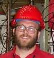

We love to have your contribution! Feel free to send us an article!
|  | August 1, 2006 - Brad Wogsland writes about his excitement at finding Wogsland.org atop Google's search results for "Wogsland" and how that inspired him to complie a list of Random Wogslands he's found on the internet over the years. |
|
| August 30, 2005 - Brad Wogsland writes about his admiration for Richard Feynman and reading Feynman's recently published correspondence. This reminded him of his grandfather Neal's correspondence and how reading those letters while in high school allowed him to get to know his grandfather better. |